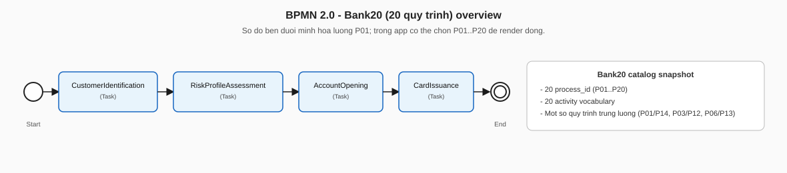
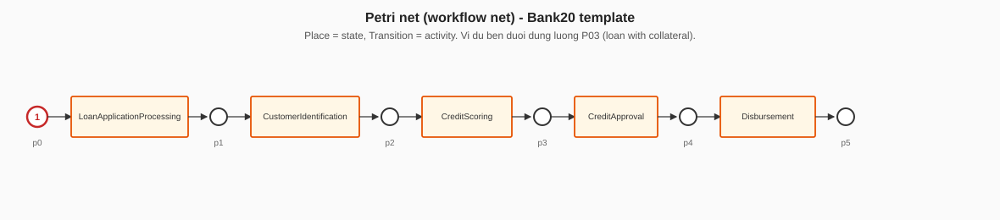

Cùng quy trình với trace chuẩn trong data/event_log_bank20.csv. Mở file này bằng trình duyệt (kéo thả hoặc Open File), hoặc chạy python -m http.server trong thư mục docs/diagrams.
data/event_log_bank20.csv
python -m http.server
docs/diagrams

